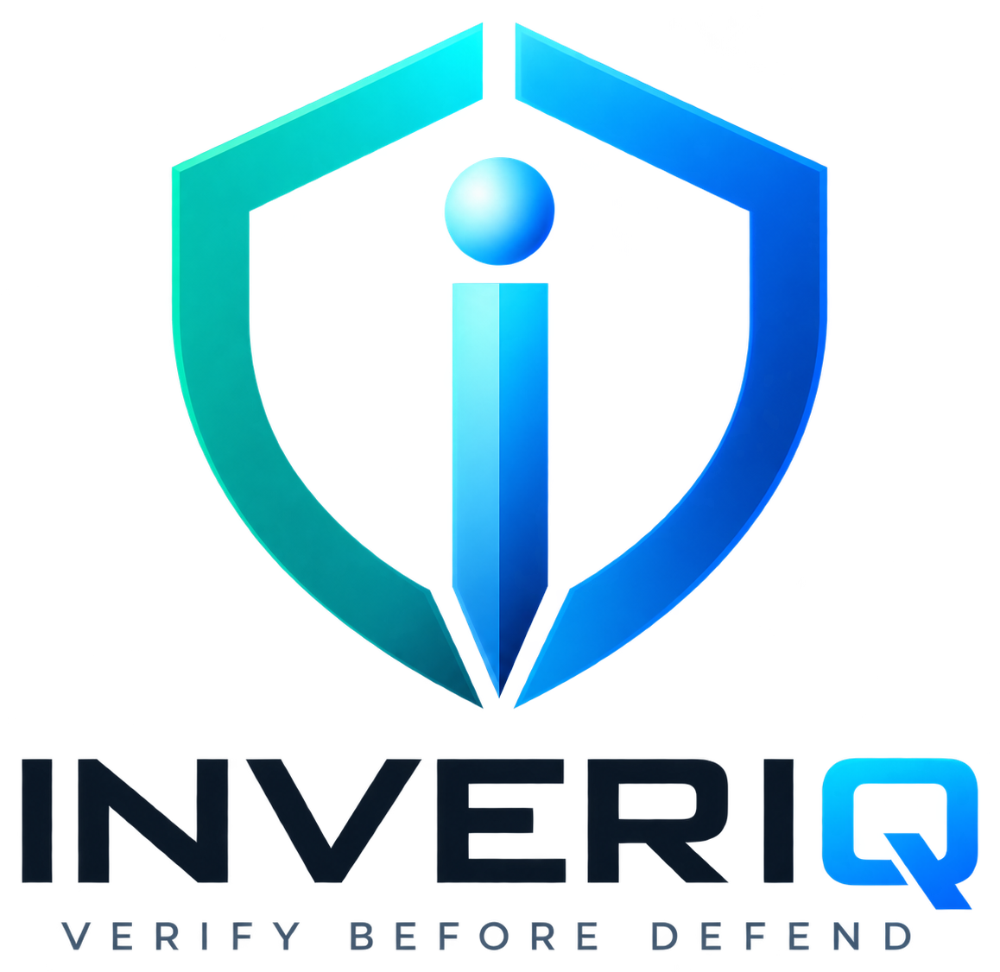

AI decides. INVERIQ verifies.
Verify AI-generated cybersecurity actions before they reach your infrastructure.

An AI-generated mitigation can successfully stop a cyberattack while also disrupting legitimate users, critical connectivity, or service availability. INVERIQ adds a verification layer between AI decisions and enforcement.
Execution is allowed only when every required gate passes.
INVERIQ is designed to integrate with existing security and infrastructure controls rather than replace them: firewalls, API gateways, Kubernetes, SDN controllers, cloud security controls, and IoT/Edge gateways.
We are selecting organizations to validate INVERIQ against real autonomous-security use cases.